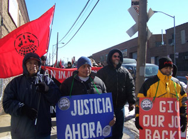

Two year report on New York City Foodstuff Workers Industrial Union 460 organizing activities
Submitted on Wed, 08/08/2007 - 12:31pm
For two years workers in New York food industry have been organizing with the IWW for higher wages, better conditions and respect on the job. The IWW IU 460's organizing drive has involved the participation of hundreds of workers and has significantly improved, directly and indirectly, wages and working conditions across the industry. Yet there is still a great deal of organizing left to do: in many sectors, sub-minimum wages and slave-like conditions still exist and the bosses have not been dealt a decisive blow. Today we urge you to pledge $5 per week to support this important campaign that has the capacity to build the IWW into a powerful force in the food industry, not just in New York, but also across the country.
WHAT HAS HAPPENED?
So far we have talked to our Fellow Workers in over locations in dozens of companies. As many as a thousand workers in the industry have heard about the campaign and over 70 have joined the IWW. In response to the campaign and numerous direct actions at these shops the bosses have given up the following wage gains (the NY minimum wage went up to $7.15 this January): Handyfat Trading from $4.50 to $8.00, EZ-Supply/Sunrise Plus Corp from $5.00 to $6.75, Amersino Marketing $5.00 to $7.15, and Top City Produce from $6.00 to $7.15. All of these shops now comply with overtime laws. And at Top City, a contract is waiting to be signed which stipulates that workers will make $8.50. Over the last two years bosses in the industry, who had grown accustomed to taking advantage of the workers, got a rude shock.
In response, the bosses have tried to bust the Union. 20 workers were fired from EZ-Supply and Handyfat in late December of 2006 and 5 temporarily suspended from Top City for a month at around the same time, for a total of around $10,000-11,500 in lost wages per week. Many of these workers have been able to find work in other shops, but some workers have been blacklisted in the industry and are having trouble keeping jobs.
In the NLRB supervised elections at Handyfat, three workers were bribed to vote against the union and at Amersino, a shift of non-workers were brought in by the boss to rig the vote. Countless other threats and intimidation have ensued including vandalism to workers property such as a car engine that was destroyed.
The workers and supporters have directly responded to the union busting with 10 strikes, dozens of pickets and demonstrations, and several marches, one with 125 and another with 200 participants. The longest picket was maintained for a full week, stopping several trailers worth of deliveries.
Now is your chance to join directly in this fight. The bosses have been stuffing their pockets with profits while the workers take home less than minimum wage and hours exceeding 60 hours per week. The bosses' parade must stop. We have a vision for this campaign to stretch across the industry and continue the gains of this movement to improve conditions everywhere. It will be a serious undertaking, but one that we believe the Union is ready to make.
Here is a run down of some critical details of the legal actions of this
campaign:
--Two workers were reinstated at Amersino (one with back wages) and a
third is waiting the appeal
--NLRB decision on the unfair Handyfat firings charges is expected in
late August
--NLRB hearing on unfair EZ-Supply firings charges is in July
--There are seven class action lawsuits filed against companies under the Fair Labor Standards Act and NY labor law:
- 1. 7-10k settlement for Bread and Co. workers
- 2. 25-35k awarded to EZ-Supply workers through the Dept. of Labor settlement
- 3. 1.2 million suit against EZ-Supply for the remainder of what is owed to the workers.
- 4. 2.2 million suit versus Giant Big Apple for approximately 20 workers
- 5. 600k suit against Handyfat for 6 fired workers
- 6. 810k suit against Amersino for 5 fired workers
- 7. 230k suit against Top City, Attorney General's Office is monitoring company for any possible future violations as well
WHERE ARE THE INDIVIDUAL DRIVES NOW?
- 1. Fresh Direct's Warehouse: First target, many workers became active and attended meetings, union wasn't strong enough to organize (1,000 workers in this warehouse) and defend against management's assault. Status: dormant with no appreciable gains and failure to build organization.
- 2. Bread and Company: Won NLRB election with all ten workers on board. Shop lost due to all workers quitting, likely due to the failure of the union to assign a competent organizer to the shop. Status: failure to force contract and no organization built.
- 3. Handyfat Trading: Negotiated first (minority) contract in Chinese food distribution industry in NYC. 6 workers covered out of 14. All 6 later fired in The Massacre. Status: organization built, but workers currently fighting for reinstatement.
- 4. EZ-Supply: Won election with 13 out of 20 voting for the union. Negotiated tentative contract in Nov '06, All 13 unionists fired in The Massacre. Status: organization built, but workers currently fighting for reinstatement.
- 5. Giant Big Apple: Failed to gain strong shop organization. Bribes from boss that include company product (beer) seem to be effective. Very large back wage settlement in federal court is proceeding after negotiations failed to yield a serious offer. Status: a couple of workers still very active, future unclear.
- 6. Amersino: Strong drive began 15 members strong. Conducted strike around non-workers voting in election, but 5 workers fired. Status: organization still has 7+ workers inside but some problems, future is unclear.
- 7. Top City Produce: The 'gang of five'. Very strong group of five workers. Contract negotiated and waiting signature. Status: organization strong with all members active and supporting.
- 8. Two drives outside of NYC where 460 organizers have a mentoring relationship with local wobs. Possibility of a third drive on the horizon.
- 9. One shop with slave-like conditions, HWH, requires excess of 80 hours and up to 115 hours per week with no overtime is being directly confronted as we write. See narconews.com video. [update] The 3 workers at HWH have been illegally terminated in retaliation for their union activity and demanding to be paid what they are owed. The Attorney General's office will be hopefully taking up their case in a week or so for the back wages and retaliation.
- 10. We will be marching on a food processing warehouse with 30 workers (15-20 supportive of the union already) and a specialty seafood distributor with 25 workers (15-20 supportive of the union) within the next three weeks. We are also meeting workers from two restaurants.
WHAT CAN I DO?
Supporters are committing to donate PayPal $5 per week to help with the organizing. Please visit http://www.iww.org/branches/US/NY/nyc/460 and scroll to the bottom of the page if you are interested in making the contribution.
Right now we have the following fundraising goals:
- 1. Rebuild our depleted defense fund, so that we will be able to have the funds to deal with firings in the future.
- 2. Raise enough funds to sustain our organizing.
- 3. Repay the Fellow Workers that lent us money during our time of need
The crisis in funds began after "the massacre" of EZ-Supply and Handyfat in Dec. 06. Our defense fund spent $20,230 in the first two months (Jan-march 07) after the firings. Over the next three months the defense fund spent $4,580, and probably another $1,000 since I did the calculations in early June. Thus, total defense fund expenditures have been $24,810 + around $1,000. Organizing costs and overhead, including trips outside of NYC to assist with other drives in the industry, has been $1, 074.50 plus probably a little more by now. The total spent by IU 460 according to my calculations on June 17, was $25,884.50.
We have received the following money to support the drive since the firings:
- Donations: $10,369 plus a bit more. This money comes mostly from Fellow Workers in the IWW. It's really a true indication of the commitment and solidarity of IWW members that we were able to raise this much primarily from within the union. We have yet to receive money from the assessments issued by GHQ.
- Loans (no interest): $19,301 - This money was borrowed from wobs who didn't want to see their fellow workers (or their families) thrown out in the street and we want to pay them back.
- Remaining in our paypal and the 460 account - around $3,000.
And we hope that in the next year we can start Wobbly Exchange program for wobblies from far off places to visit New York and get on the group experience helping to build One Big Industrial Union in the food industry. If any Wobbly's would like to move to New York, we can use the help.
In Solidarity,
Dan Elgin and Alex van Schaick